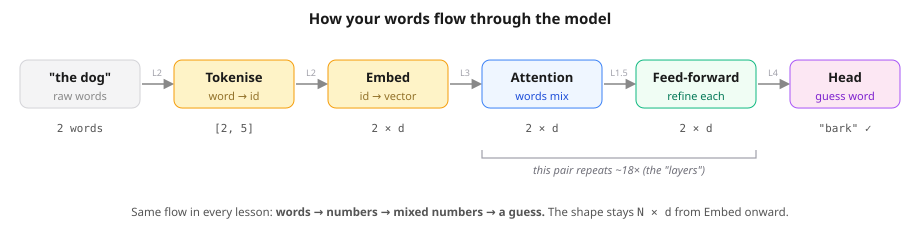
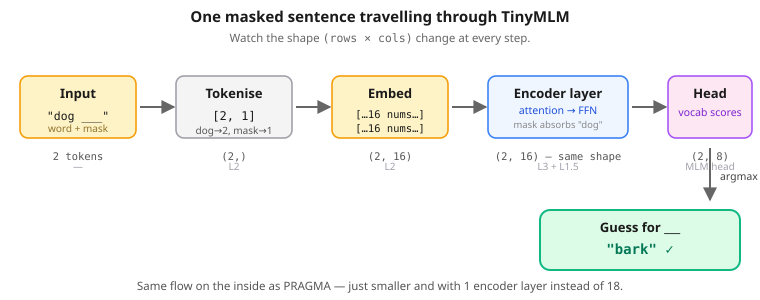
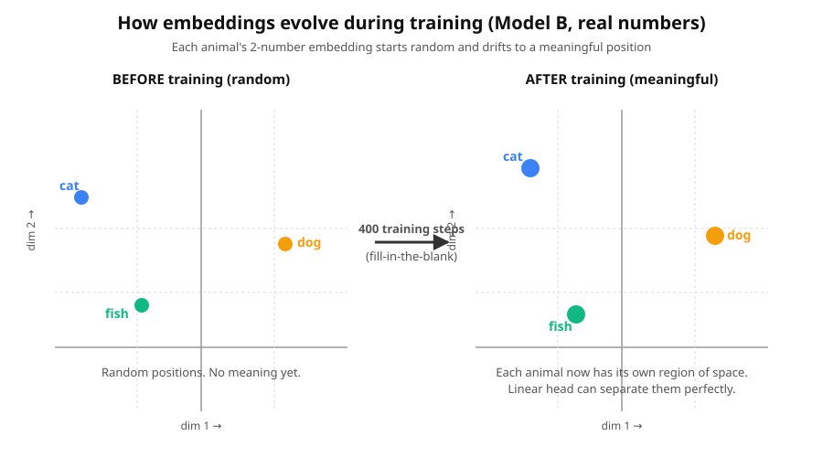
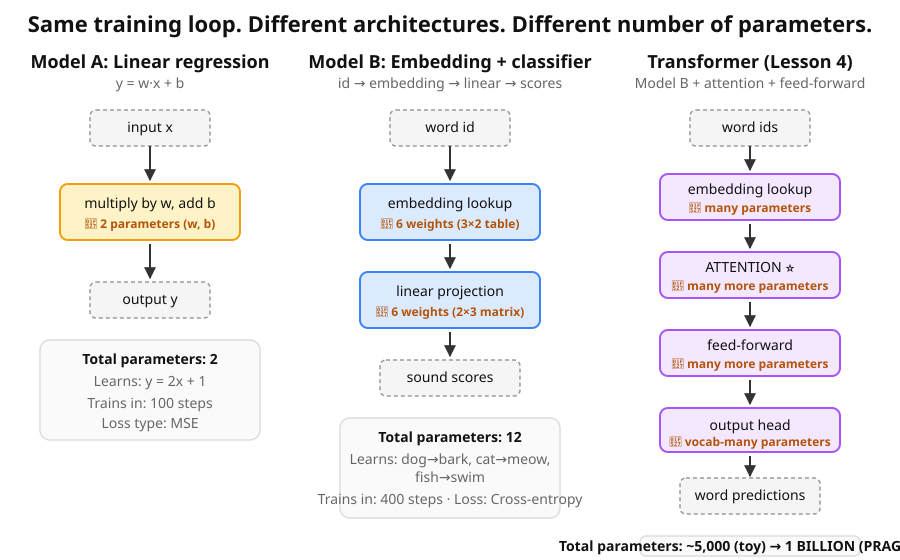

Combine embeddings (L2) + attention (L3) + the feed-forward MLP (L1.5) + the 5-line training loop (L1). Play fill-in-the-blank.

🔢 Still just numbers. here it's masked token ids and the cross-entropy loss — and underneath, every number here is just bits (0s and 1s), the only thing a computer can actually store.
In L3 you saw how a Transformer lets words look at each other with attention. But what are all those weights actually trained to do? Here's the game BERT plays: pick a sentence with a word missing, and have the model guess what was there. You don't need to label any data — the right answer is whatever word you hid.
If you have "The cat sat on the mat", you get 6 training examples from one sentence:
| Masked input | Answer |
|---|---|
| ____ cat sat on the mat | The |
| The ____ sat on the mat | cat |
| The cat ____ on the mat | sat |
| The cat sat ____ the mat | on |
| The cat sat on ____ mat | the |
| The cat sat on the ____ | mat |
Free training data! This is why BERT (and PRAGMA) can be trained on the whole internet without humans labelling anything. The fancy name is masked language modelling (MLM).
This is the question that trips everyone up. We're not masking because we want to fill in blanks — we're masking to manufacture a training task out of regular text. Look at the chain:
The mechanics get hand-wavy fast. Let's walk through ONE training example end-to-end with the actual tensors the model sees. Take a sentence and pick one position to hide:
original sentence: "the cat sat on the mat"
positions: 0 1 2 3 4 5
↑
we randomly pick this oneTwo things happen at the same instant: we save the word at position 2 (that's our answer key), and we replace it with a special placeholder token called <mask>.
0 1 2 3 4 5
input the model sees: the cat <mask> on the mat
saved as answer (label): sat ← we know this; we just hid itThe <mask> is a real word in our vocabulary (a placeholder we added on purpose — id 1 in our 8-word vocab). The model knows position 2 exists, sees the placeholder, and has to guess what was there using only the surrounding words. It never sees sat during the forward pass.
So, to answer the two things everyone asks about masking:
y_true in Lesson 1's regression.Transformers produce one output per input token (every position gets a guess). But for this training example we only care about position 2. The way PyTorch is told that is with a labels array the same length as the input, where every position has either the true word id OR the magic value -100 (which means "skip this one"):
0 1 2 3 4 5
input ids: [the] [cat] [mask] [on] [the] [mat]
labels: -100 -100 sat -100 -100 -100
↑
only this position countsCross-entropy loss reads that array: "ignore the -100 positions; at position 2 the right answer is sat — grade me on whether I put high probability on sat there." The five -100s are why the model isn't penalised for being uncertain about the words it was already shown.
<mask> → that becomes the input (x).make_example() in the notebook.# Build ONE training example by hand sentence = "the cat sat on the mat" hide_pos = 2 words = sentence.split() ids = [tok2id[w] for w in words] # tokenise → list of integer ids answer = words[hide_pos] # save the truth — this is the LABEL (y) labels = [-100] * len(ids) # -100 = "don't grade this position" labels[hide_pos] = ids[hide_pos] # only the hidden position holds the answer ids[hide_pos] = tok2id["<mask>"] # replace word with <mask> in the INPUT (x) print(f"input ids: {ids}") print(f"labels: {labels}") print(f"answer: {answer}")
hide_pos to 0. What word becomes the answer? What does it become in input ids?
The first word of the sentence becomes the answer — e.g. for "the cat sat on the mat", the answer is "the". In input ids, position 0 changes from "the"'s id (2) to the mask token's id (1). The code is symmetric in position: ids[hide_pos] = MASK works just as well at position 0 as at position 4. Nothing special about the start.
labels?
Position 4 of that sentence is "the" (id 2). So labels = [-100, -100, -100, -100, 2, -100] — five -100s and one real id at position 4. The -100 is PyTorch's "skip this position" marker for cross-entropy. Only the masked position has a real target; everywhere else, we already showed the model the answer, so there's nothing to grade.
hide_pos to the end. Does the mask move?
Yes — the mask is exactly where you put it. A 7-word sentence has positions 0–6, and the slider now reaches all 7. Hide position 6 → "park" becomes the answer, position 6 becomes <mask>. The model treats every position the same — first word, last word, middle — same code, same gradients. Transformers don't have a "left-to-right" bias the way old models did.
-100s in labels. Why exactly one number ISN'T -100?
For a sentence of length N, there are N − 1 -100s and exactly one real id (at hide_pos). Why? Because we masked exactly one word per training example. Only that one position has a target to predict; everywhere else, the model can already see the answer in the input. Real BERT masks ~15% of tokens (so multiple positions might be non--100 in a single example) but the principle is identical: cross-entropy only grades the positions you hid.
make_example() function — open it to run with the actual torch training loop wrapped around it.
That's the data trick. But there's a deeper trick: to get good at this game, the model is FORCED to learn the structure of language.
Think about what the model has to figure out to guess sat in "The cat ___ on the mat":
So masking isn't really about filling in blanks. It's a scoreable task that secretly forces the model to learn everything we wanted it to learn — meaningful embeddings, useful attention patterns, grammatical structure. All as a side effect of winning the game.
loss.backward(), opt.step(), repeat.8 words. 3 hidden rules the model must rediscover from masked examples.
vocab = ["<pad>", "<mask>", "dog", "cat", "fish",
"bark", "meow", "swim"]
PAIRS = [("dog", "bark"), ("cat", "meow"), ("fish", "swim")]Pick a pair, randomly choose which slot to hide, replace it with <mask>, remember the true answer.
animal, sound = random.choice(PAIRS) # e.g. ("dog", "bark")
ids = [tok2id[animal], tok2id[sound]] # [2, 5]
labels = [-100, -100] # -100 = "don't score this position"
hide = random.choice([0, 1])
labels[hide] = ids[hide] # remember real answer
ids[hide] = tok2id["<mask>"] # hide it
# → ids = [1, 5], labels = [2, -100] "predict dog at position 0"Same logic, wrapped in make_example(). Called 32 times per training step to build a batch.
Back in Lesson 1 the model predicted a single number (y_pred), and we measured wrongness with MSE — the squared distance from the truth. That worked because the prediction was a number, and "how far off" was a sensible question.
Here in Lesson 4, the model isn't predicting a number — it's picking a word from a list of 8. Asking "how far off" doesn't make sense: id 2 (dog) isn't "closer" to id 3 (cat) than to id 7 (swim); the ids are just arbitrary labels. We need a different kind of loss — one that works on picking from a list of choices.
That loss is cross-entropy. It's what every classification model in the world uses, including BERT, GPT and PRAGMA. We'll do it by hand on one example.
Before we can compute a loss, we need to know what the model is outputting. Let's peek at the architecture for a second (you'll see it in full in Step 5):
class TinyMLM(nn.Module):
def __init__(self):
self.emb = nn.Embedding(V, 16) # word → 16-dim vector (L2)
self.enc = nn.TransformerEncoderLayer(...) # attention + FFN (L3 + L1.5)
self.head = nn.Linear(16, V) # 16 numbers → V scores ← THIS!The very last layer — self.head — is just a Linear layer, the same kind we built in L1.5. It takes the 16-dim vector at each token's position and projects it to V = 8 numbers, one per vocab word. Each one is computed as weight · vector + bias — exactly the math from L1.5's MLP.
This "head" is the output head — a different thing from the attention heads in Lesson 3. Attention heads are the parallel question-askers inside a layer; the output head is the single final layer that turns the finished vector into word scores. Same word, different job.
Those V numbers are called logits. They're just scores — any real number, positive or negative. Big logit = the model leans toward that word. But they're not probabilities yet.
word → embedding → attention + FFN → 16-dim vector → Linear head → 8 logits → softmax → 8 probabilities → cross-entropy → loss
Stages A/B/C below just walk through the last three boxes.
We'll use the same example throughout: the masked sentence is "the dog ___" and the right answer is bark (id 5 in our 8-word vocab).
Suppose the head's Linear layer produces these 8 numbers at the masked position:
vocab: <pad> <mask> dog cat fish bark meow swim
logits: -1.0 -0.5 0.0 -0.3 -0.8 +2.5 +0.5 -0.5Bigger logit = the model favours that word more. Here bark got the biggest logit (+2.5), so the model is leaning the right way. But we want a probability, not a score.
Softmax turns any list of numbers into a probability distribution (everything ≥ 0, all summing to 1). It does this in two tiny moves:
e^logit. This makes them all positive and amplifies differences (a small advantage in raw score becomes a big advantage in probability).logit -1.0 -0.5 0.0 -0.3 -0.8 +2.5 +0.5 -0.5
exp(logit) 0.37 0.61 1.00 0.74 0.45 12.18 1.65 0.61
^ enormous
sum of all exp(...) = 0.37 + 0.61 + 1.00 + 0.74 + 0.45 + 12.18 + 1.65 + 0.61 = 17.60
probability = exp(logit) / 17.60
prob: 2% 3% 6% 4% 3% 69% 9% 3% ← sums to 100% ✓Bark got 69% probability — the biggest slice of the pie. The other 31% is spread across the seven wrong answers.
Cross-entropy looks at only one number: the probability the model gave the right answer (here, bark = 0.69). The loss is the negative natural log of that:
loss = -log(0.69) = 0.37A small loss because the model was reasonably confident in the truth. The other 7 probabilities don't appear in the formula — we only grade against the right answer.
−log? (intuition behind the shape)−log(p) as "how surprised should we be that the model was right?"
p = 1.00 (totally sure) → −log(1.0) = 0. No surprise → no loss.p = 0.50 → −log(0.5) ≈ 0.69. Mild surprise.p = 0.10 → −log(0.1) ≈ 2.30. Big surprise.p = 0.01 → −log(0.01) ≈ 4.61. Huge surprise — the model was almost sure the answer was something else and it wasn't.p → 0 → −log(p) → ∞. The model gets infinitely punished for being absolutely wrong.| If model gave bark probability… | loss | verdict |
|---|---|---|
| 80% | −log(0.80) ≈ 0.22 | 😀 confident & right |
| 69% (our worked example) | −log(0.69) ≈ 0.37 | 🙂 leaning right |
| 30% | −log(0.30) ≈ 1.20 | 😐 unsure |
| 2% | −log(0.02) ≈ 3.91 | 😖 sure of the wrong thing |
−log.F.cross_entropy(logits, target) does all three for you in one call. It accepts raw logits directly (no need to softmax first) because the math is numerically more stable that way.
vocab = ["<pad>","<mask>","dog","cat","fish","bark","meow","swim"] target = "bark" # the right answer (id 5) logits = [-1.0, -0.5, 0.0, -0.3, -0.8, 2.5, 0.5, -0.5] # Softmax: exp every logit, then divide each by the sum exps = [exp(z) for z in logits] total = sum(exps) probs = [e / total for e in exps] # Cross-entropy: −log of the probability of the right answer p_truth = probs[5] # 5 is bark's id loss = -log(p_truth) print(f"p_truth = {p_truth:.3f}") print(f"loss = {loss:.3f}")
+5.0 (and keep the others low). What's the loss?
The loss drops to roughly 0.01–0.05 — almost zero. With bark's logit so dominant, softmax assigns it ~99% probability, and −log(0.99) ≈ 0.01. That's a model that has learned the rule perfectly: full confidence in the truth → near-zero loss.
Each word gets 1/8 = 0.125 probability. Loss = −log(0.125) ≈ 2.08. This is the "random guess" baseline for an 8-class problem — exactly what we'd expect from an untrained model that has no preference. The number log(N) where N is the vocab size is the loss you'd get from a pure-random guesser. For BERT's 30,000-word vocab that's about log(30000) ≈ 10.3 — every model starts there before learning anything.
Bark's probability collapses to essentially 0 — the loss blows up (often above 8). That's the asymmetry of cross-entropy: being confidently WRONG is punished much harder than being uncertain. The model wakes up with a huge gradient pulling bark back up. This is exactly why training works — the wrong moves get strong corrective signals.
+2.5 (the value from the worked example). Check the printout — does it match the loss ≈ 0.37 we computed by hand?
Yes — to within rounding, you should see p_truth ≈ 0.69 and loss ≈ 0.37. The widget runs exactly the math from above — exp every logit, divide by the sum, then −log of the bark slot. Cross-entropy isn't magic; it's just these three little operations stacked together.
F.cross_entropy(logits, target) does this whole pipeline (softmax + −log) in one call. The function we wrote it as exists in PyTorch precisely to save us from typing exp/log every time.
Before the code: here's one masked sentence flowing all the way through. Each box transforms the data — the shape tells you what changed.

"dog ___" → 2 ids → a (2×16) block of embeddings → encoder mixes them and the mask absorbs "dog" → head turns each row into vocab scores → argmax on the mask row → "bark" ✓.The entire architecture is three lines of code. You've seen each piece in earlier lessons.
class TinyMLM(nn.Module):
def __init__(self):
super().__init__()
self.emb = nn.Embedding(V, 16) # L2
self.enc = nn.TransformerEncoderLayer(16, 2, 32, # L3 + L1.5
batch_first=True)
self.head = nn.Linear(16, V) # predict word
def forward(self, x):
return self.head(self.enc(self.emb(x)))| Component | Origin | What it does |
|---|---|---|
nn.Embedding(V, 16) | L2 | Token id → 16-number vector |
nn.TransformerEncoderLayer (attention) | L3 | Q/K/V + softmax — tokens look at each other |
nn.TransformerEncoderLayer (feed-forward) | L1.5 | Linear → GELU → Linear, per token |
nn.Linear(16, V) | — | Vector → score per vocab word |
Random weights → random predictions. On 8 vocab words the expected loss is log(8) ≈ 2.08. The notebook prints the model's confidence on a sample masked input — it's uniform-ish across all 8 words. The model knows nothing yet.
Same 5-line loop you've used since L1. The only thing that's new is the model in the middle.
for step in range(500):
batch = [make_example() for _ in range(32)]
ids, labels = zip(*batch)
x = torch.tensor(ids); y = torch.tensor(labels)
logits = model(x) # 1. guess
loss = loss_fn(logits.reshape(-1, V), y.reshape(-1)) # 2. wrongness
opt.zero_grad() # 3. clear
loss.backward() # 4. gradients
opt.step() # 5. nudge ALL weightsLoss curve from the notebook:
step 0 loss 2.482 ← random guesses
step 100 loss 0.073 ← already nailed it
step 400 loss 0.006 ← essentially zeroFill in the blank:
dog -> bark ✓
cat -> meow ✓
fish -> swim ✓After training, the 16-dim embedding vectors for dog and bark have moved closer together than at random init — because the model needs them to be predictable from each other. Same for cat/meow and fish/swim. The training game taught the embeddings what's related to what.

I ran TinyMLM at four embedding sizes d on the dog↔bark / cat↔meow / fish↔swim rules (400 steps each), holding the feed-forward width at dim_feedforward=32 — exactly the value in the real code, so the d=16 row is the model you actually run:
| d (embed dim) | total params | final loss |
|---|---|---|
| 4 | 460 | 0.004 ✅ |
| 8 | 1,008 | 0.001 ✅ |
| 16 | 2,488 | 0.0004 ✅ |
| 32 | 6,984 | 0.0001 ✅ |
Even at d=4 with only 460 parameters, the model nails the rule. For comparison, PRAGMA-Large has 1,000,000,000. The big models aren't powerful because they're big — they're big because the task is enormous (modelling all banking activity). Right-sizing the model to the task is half the art.
In Lesson 1.5 you walked the word dog through 18 layers and watched its "knowledge bundle" fill up. Now let's do the same thing for a whole sentence you choose — and instead of filling in a blank, we'll do the trick that makes ChatGPT feel alive: predict the very next word, then add it, then predict again, then again… until the model has written a sentence on its own.
Pick a starter, then press Next ▶ to follow your words through every stage of the model. At the end you'll see its top guesses for the next word — and you can accept a word and let it keep writing.
The widget below uses illustrative numbers, but the notebook above trains a real (tiny) next-word Transformer in a few seconds and prints this exact data journey with genuine attention weights and predictions — generate sentences one word at a time, then poke at the internals yourself.
The vectors, attention weights and scores above are illustrative — stable, believable numbers generated in your browser so the shapes and the flow are real, even though we can't run a billion-parameter model in a web page. The next-word probabilities behave like a tiny trained model: confident on common patterns, fuzzy on rare ones — exactly the texture you feel when ChatGPT is sometimes spot-on and sometimes makes things up.

You actually built two tiny models in this lesson: TinyMLM (Step 5 — the fill-in-the-blank / masked model) and its next-word cousin from the data journey. They play different games but are almost the same size — and both sit a long way from real PRAGMA:
| Our tiny models (TinyMLM & the next-word cousin) | Real PRAGMA-Large |
|---|---|
| 8–31 words in vocab | ~28,000 |
| 2–8 tokens per example | Up to thousands |
| 1 encoder layer (1 attention + 1 FFN) | 18 encoder layers (18 attention + 18 FFN) |
| ~2,000–11,000 parameters total | 1 billion |
| A handful of toy patterns to memorise | Structure of real banking event streams |
| Seconds on a laptop | 2 weeks on 32× NVIDIA H100 GPUs |
Same five-line training loop. Same gradient descent. Same five-stage pipeline (embed → attention → feed-forward → head → softmax). Whether it fills a blank (TinyMLM, BERT) or predicts the next word (the cousin, ChatGPT), PRAGMA is just this — scaled up, with 18 stacked blocks instead of 1.
Use the masking playground above (build a training example by hand).
Keys are predictable boilerplate — recovering them teaches little. Masking values forces the model to learn the real patterns.
With almost everything hidden there's no context to predict from — the game becomes impossible. ~15–25% is the sweet spot.
The target is the original hidden token; cross-entropy compares the model's probability for it against 1.0 — less confidence = more loss.
With nothing hidden there's nothing to predict; the blank is the whole training signal.
Not necessarily — the model predicts from context, so different neighbours can give different answers. That's the point.
The 5% case — −log(0.05)≈3.0 vs −log(0.70)≈0.36. Less confidence in the right answer = more loss.
BERT fills blanks anywhere (sees both sides); GPT predicts the next word (sees only the left). Same loop, different blank.